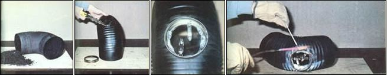
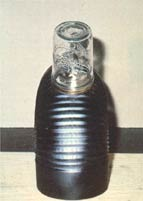
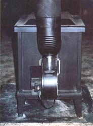

One Welding Torch + Two Canning Jars = A Safer Woodstove!
Let's admit it: Woodstoves may save their owners lots of money on heating bills, consume a renewable fuel, and provide a soul-soothing heat no radiator or hot-air duct will ever match . . . but the logburners do have a few drawbacks. And one of the biggest disadvantages to heating with wood is an inevitable byproduct of combustion that coats the inside of your chimney and loves to drip onto the floor.
I'm referring - of course - to that agent of dangerous chimney fires, that scourge that keeps you cleaning out your stovepipes a lot more often than you'd like to, that sometimes liquid, sometimes solid mass of black that has a mission to mar and stain, and generally endanger your health and well-being . . . that's right, creosote!
But wait! While it may be true that no woodburner can avoid producing the sooty substance, a quick glance at this article's photos will. show you that it's possible to make the problem a whole lot easier to deal with. . . simply by building MOTHER's handy creosote catcher. Fastened underneath the elbow of an ordinary across-and-up run of stovepipe, this "soot sack" can serve as both a gunk (solid) and gook (liquid) collector. If you tap on your pipe each morning while the stove's still relatively cool, many of the black flakes that may have accumulated in your chimney overnight will drop harmlessly into the wide-mouth canning jar . . . while the liquid creosote (which forms when you're running a cool fire with a reduced air intake) will simply drain down into your handy crud trap.
On top of all that, you can unscrew the jar during your regular pipe cleanings (NO creosote catcher is going to eliminate the need for periodically scrubbing down your chimney's innards!), attach a plastic bag around the opening, sweep out your smokestack from above, replace the bag with the jar . . . and you'll have finished a dust-free cleanup job, without removing a single section of pipe!
MOTHER's soot catcher has to be positioned at the low point of a section of pipe (since the device only collects what falls or drains into it), so the handy stove aid will NOT work on every smokestack layout. If your pipe exits vertically from the top of your stove, you won't have a good low point at which to situate the simple crud collector. Of course, should the pipe run make a sharp turn and then continue horizontally, you can install a jar along the low point of that "across" section. [EDITOR'S NOTE: A truly horizontal run of pipe would not have a low point, but - to help the fire's draft - most "level" lengths of stovepipe should be angled slightly upward.]
Such a trap will capture liquid drainings from the "horizontal" part of your chimney, but it won't collect creosote shards from that section . . . or any soot at all from the vertical pipework. If, however, your pipe exits horizontally from your woodburner - with the elbow near the stove - you can simply attach the jar rig on the underside of your 90° joint, and it'll be positioned perfectly for collecting.
(If your particular stovepipe comes out the back - and not the top - of the heater, but contains a long "sideways" run before the chimney reaches a right angle turn, you should install two crud catchers: one at the elbow to trap the vertical "fallout" . . . the other near the body of the stove to collect any drainings that dribble down the slightly inclined horizontal section.)
To get started on your homemade creosote catcher, first remove the elbow pipe section from your chimney. This corner piece may be either a solid unit or an adjustable section. If you have one of the latter, flexible-angle elbows, either replace that leak-prone piece with a solid right angle joint (that's what I'd do!) . . . or braze the section's movable interfaces - along their lower edges - to eliminate any possible in-line leaks.
Once you've removed (and, if necessary, replaced or modified) your pipe elbow, place your wide-mouth jar's lid ring on the low point of the "chimney corner" and trace the inner circumference of the metal loop onto the pipe. Cut the circle thus marked out of the stovepipe with a pair of tinsnips or kitchen shears. (You'll find this an easy task if you first drill a hole just inside the circle to give your cutter a starting point.)
When you've finished carving out the hole - and flattening out any particularly uneven ridges - slightly bend the edge of the circle outward with a pair of pliers. Then secure the canning rim to the pipe with a couple of battery or alligator clips. You may find a few gaps where the lid and pipe don't quite meet. Stuff some aluminum foil (folded to a minimum of eight thicknesses) into any such openings. Now screw an expendable canning jar into the rim.
OK. It's time to braze. Any small propane/oxygen system or inexpensive brazing outfit will serve for this job. Just be sure not to solder the lid in place . . . or else the whole unit may drop off when you fire up the stove and that silvery metal melts! Also, be careful to use the cooler outer portion of the torch's flame as you work so you won't damage the thin material you're working on.
Make your seal along the outside of the lid's rim. As soon as you start applying heat, you'll learn why I recommended attaching an expendable jar to the canning ring . . . the glass will break! With any luck, though, the thread section of your container will remain intact and do its "job", which is to keep the metal lid from de-forming while you work. (If the threads do break, you'll have to wait until the whole area cools down and then sacrifice another jar to the cause! )
When that task is done, unscrew (or break) the rest of the jar out of the lid . . . using a pair of needle-nosed pliers for safety. Remove the fastening clamps, discard the aluminum foil, and clean off any burnt paint with a wire brush.
The next step is to make sure your brazed seal is airtight. You can test this by running water around the outer rim of the lid and seeing if any liquid drips through to the inside of the pipe. (If you do discover leaks, insert another jar - you can skip the clamps and foil this time - and rebraze the defective area.) Then apply some stove paint to your metalwork, reassemble your stovepipe, and screw in a jar.
If you've added MOTHER's creosote catcher to an already-in-use woodstove, you can put the crud trap to work right away. Simply tap your stovepipe a few times and watch the jar fill with flakes of creosote. Dump out the sooty contents, reattach the jar, and tap your pipe some more. Repeat this procedure as many times (you'll be surprised at the number) as needed.
So with your job done - and your mind a bit more at ease - you can now take the time to go out and split tomorrow morning's kindling . . . or to sit down and read another article in MOTHER!
EDITOR'S NOTE: Mr. DeBee has used a glass-jar crud trap for a full heating season . . . and found the device a great help in cleaning (and monitoring the buildup of creosote in) his airtight stove. But, while MOM's creosote catcher can make it easier for you to tidy up your own stovepipe, it in no way lessens the need for such conscientious maintenance. In fact, if you do allow your flue to get so sooty that a chimney fire occurs, the glass jar could possibly break from the extreme heat . . . and you'd need to quickly, plug the gaping hole that would result. So be sure to follow this primary rule concerning the handy crud catcher: If you build it, use it!
|
 (PHOTOS BY THE AUTHOR) FROM LEFT: Creosote loves to gather in a woodstove's chimney. . . To build MOM's soot catcher, first cut a hole out of a stovepipes section. . . Secure a canning ring over the hole with clips. . . Then screw on an expendable jar (omitted from this photo for illustrative clarity,) and braze the ring in place. . . |
 The finished assembly. . . . |
 The installed jar will soon fill with black soot. |